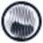
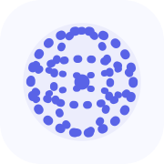
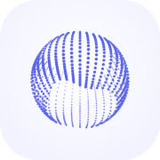
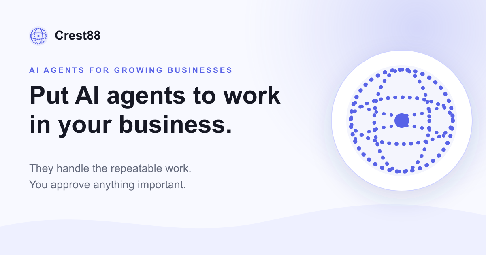
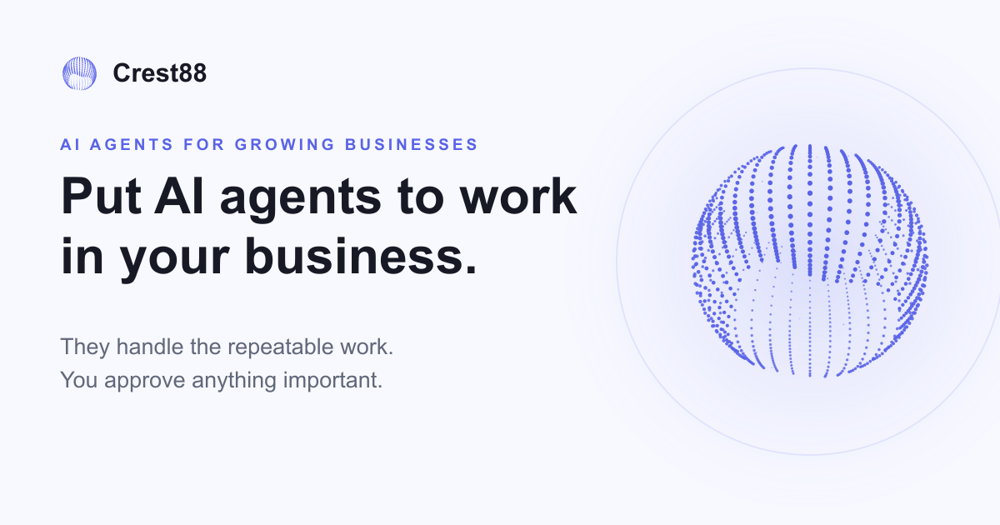

Current · substitute globe
16
24
32
48
Crest88
Crest88
Favicon motion review · issue 2197
The released site already has the right mark: the animated spherical ribbon. This preview replaces the unrelated latitude/longitude globe in browser, app, and social assets with the orb’s exact reduced-motion frame.
Live favicon preview
Like GitHub’s favicon, the mark now carries its own circular contrast field: ink on light browser chrome, white on dark. The transparent corners preserve a true round silhouette while the ribbon gently reshapes.
The proposed mark stays transparent outside a true circular field. The field flips between ink and white so the orb remains legible against either browser theme.

48The pale platform tile remains, but its center is now the same ribbon mark. A slightly larger safe area keeps the orb legible after iOS masking.

The globe reads clearly, but it is not the mark currently used by the product or public site.

Same cool daylight tile, now with the canonical spherical ribbon and no competing geometry.
The message stays unchanged. The white medallion and generic wave are removed so the real orb can own the composition.


favicon.ico fallback.